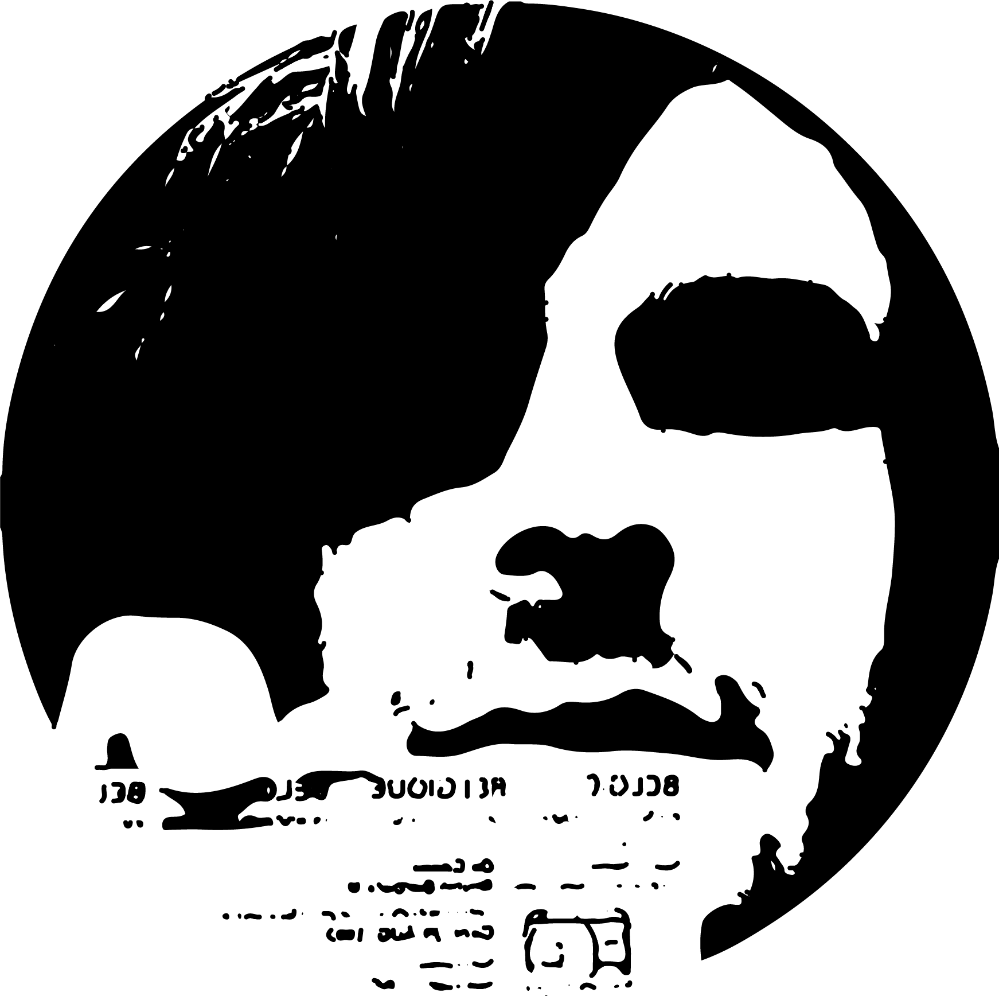

De Coene Bruno
Grafische en digitale media
29.08.1992
Persoonlijk
Ik ben 25 jaar oud en volg de opleiding grafische en digitale media aan de Artevelde Hogeschool te Mariakerke. Mijn passie voor webontwikkeling en alles omtrent digitale media is al enkele jaren sterk aanwezig. Ik heb hier dan ook een mooie kennis in verworven de laatste jaren met behulp van mijn opleidingen en persoonlijke zelfstudie.
Ik ben een leergierig, sociaal persoon en ben in staat om zowel in groepsverband als op zelfstandige basis goed werk te leveren